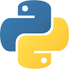

Ethan Havlik's Portfolio
Software Development student at CWI

Greetings, prospective employers
This is my portfolio, where you can find my most recent high-quality work. I am proficient in several different programming languages and design frameworks, and my solid fundamentals allow me to pick up new languages and development environments quickly. The work samples in this portfolio show my ability to write clean, efficient code as well as my eye for detail. Continue reading below to learn more about me, or jump straight into my work samples.
About me
I have been playing video games forever, and when the notion of working in the video game industry in some capacity was presented to me, I made that my long term goal. I am constantly learning about what goes into making a game, from the artwork to the code. My horizons are broadened in the short term, and I will gladly work anywhere that I can practice my programming skills as that is the route I have chosen.
I first got interested in programming in middle school, where I was exposed to things like Scratch and Code Combat. In high school, my interests shifted to graphic design; that was initially what I studied at college, but I grew a distaste for being forced to create art, so I circled back around to programming and picked up Python before studying for an Associate's Degree in Software Development at CWI. My studies have given me the skills and confidence I need to complete any programming project.
My skills
Languages
I started learning Python in the summer of 2023, tinkering with it off and on until I reached an intermediate level. I reached the same level with C# within a school semester, as well as HTML/CSS/JS. In my second year, I honed my Python skills and picked up SQL. Often during college, I have helped my classmates better understand the languages we have been learning. I specialize in backend development with Python and C#.
Developing with frameworks
In addition to learning the languages of front end development, I have experience using frameworks to jumpstart website projects and even create simple games. I used Bootstrap to create this website. ASP.Net Core is the most advanced toolkit that I have learned to use.
Working with databases
I learned database management with SQL Server, and I can create/modify databases and write queries proficiently. I also know how to integrate databases into Python projects and ASP.Net Core MVC apps.
Collaborating with AI
One of the less conventional skills I acquired is leveraging AI to quicken my workflow and improve my knowledge on programming specifics. I have learned how to write prompts that not only generate the code I need but further my understanding of programming concepts.
Education
I graduated from Meridian Technical Charter High School in 2020, having taken the Design and Development Pathway. I briefly studied graphic design at BSU, took two years to reevaluate and choose a new career, and enrolled into software development at CWI. I now have my Associate's degree.